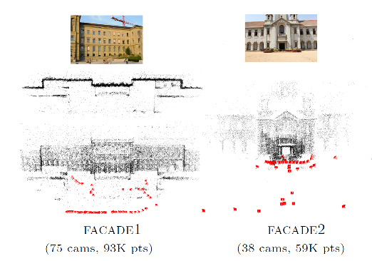

To appear at RMLE 2010 ECCV-workshop |
||||||||||||||||||||||||||||||||||||||||||||||||||||||||||||||||||||||||||||||||||||||||||||||||||
A multi-stage linear approach to structure from motion
|
Sudipta N. Sinha |
Drew Steedly |
Richard Szeliski |
|  |
|
[pdf]
[supplementary page] Abstract We present a new structure from motion (Sfm) technique based on point and vanishing point (VP) matches in images. First, all global camera rotations are computed from VP matches as well as relative rotation estimates obtained from pairwise image matches. A new multi-staged linear technique is then used to estimate all camera translations and 3D points simultaneously. The proposed method involves first performing pairwise reconstructions, then robustly aligning these in pairs, and finally aligning all of them globally by simultaneously estimating their unknown relative scales and translations. In doing so, measurements inconsistent in three views are efficiently removed. Unlike sequential Sfm, the proposed method treats all images equally, is easy to parallelize and does not require intermediate bundle adjustments. There is also a reduction of drift and significant speedups up to tw orders of magnitude over sequential Sfm. We compare our method with a standard Sfm pipeline [1] and demonstrate that our linear estimates are accurate on a variety of datasets, and can serve as good initializations for final bundle adjustment. Because we exploit VPs when available, our approach is particularly well-suited to the reconstruction of man-made scenes. |